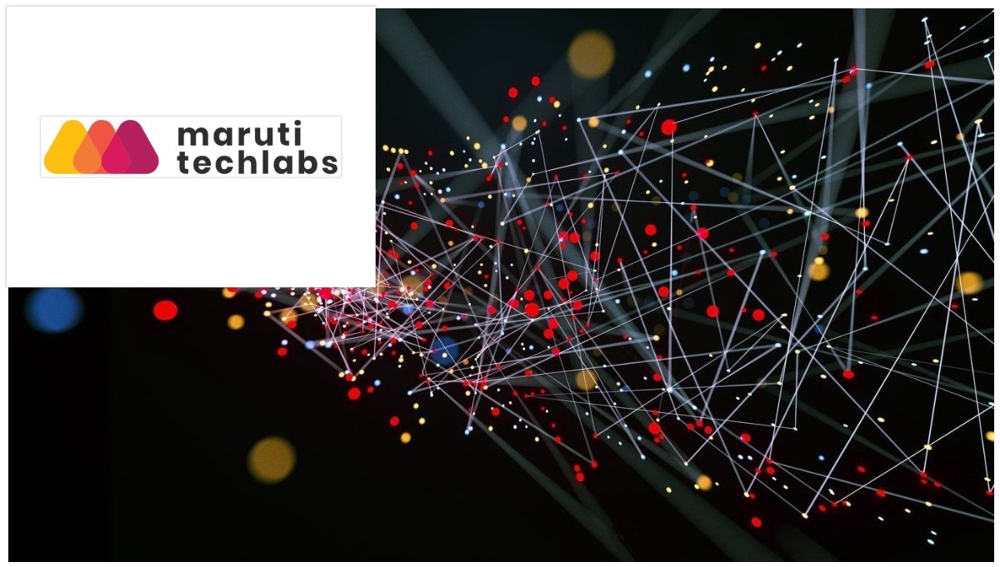
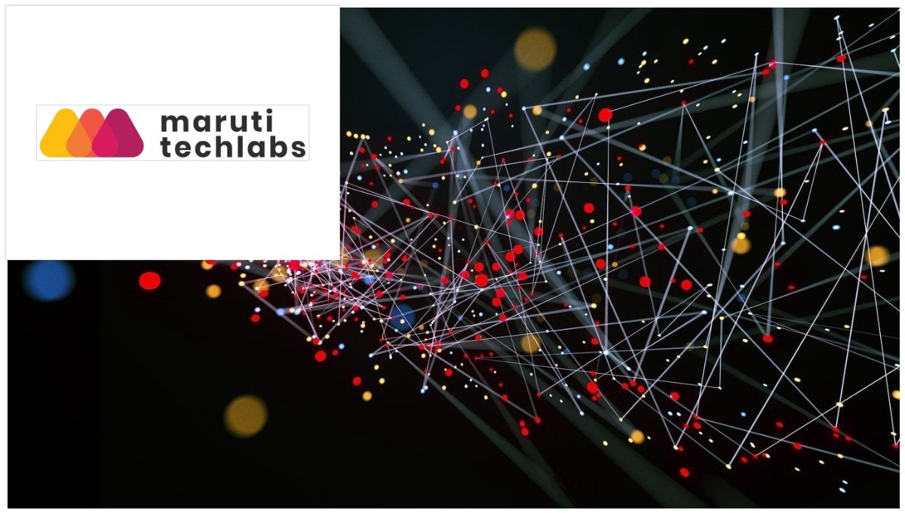
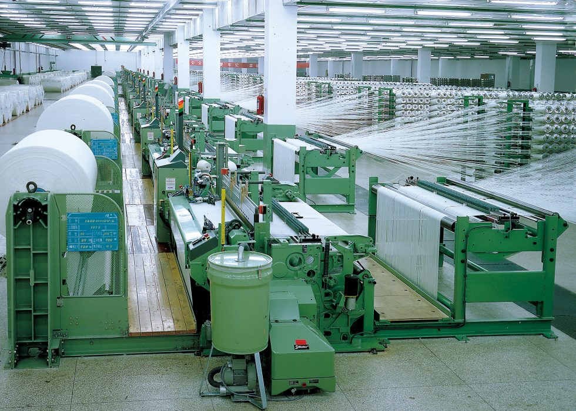
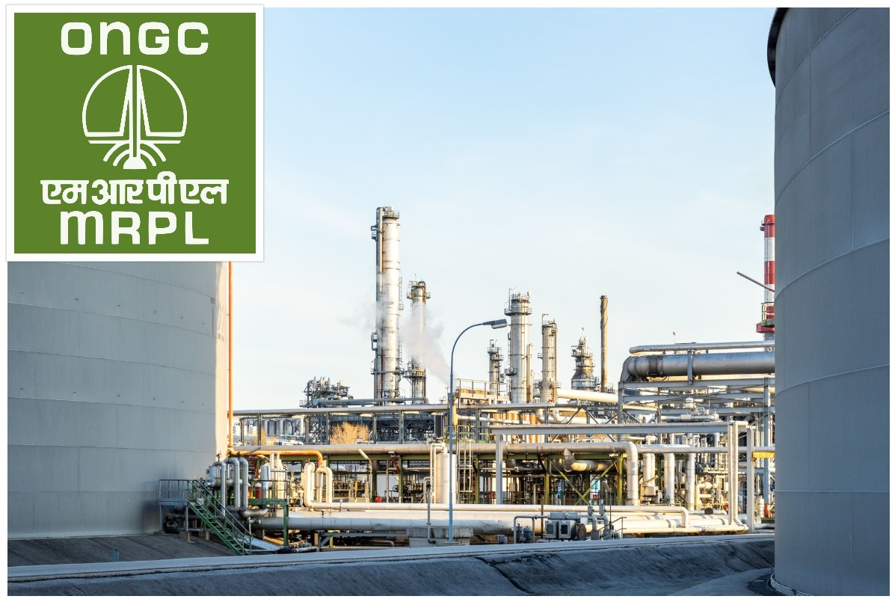
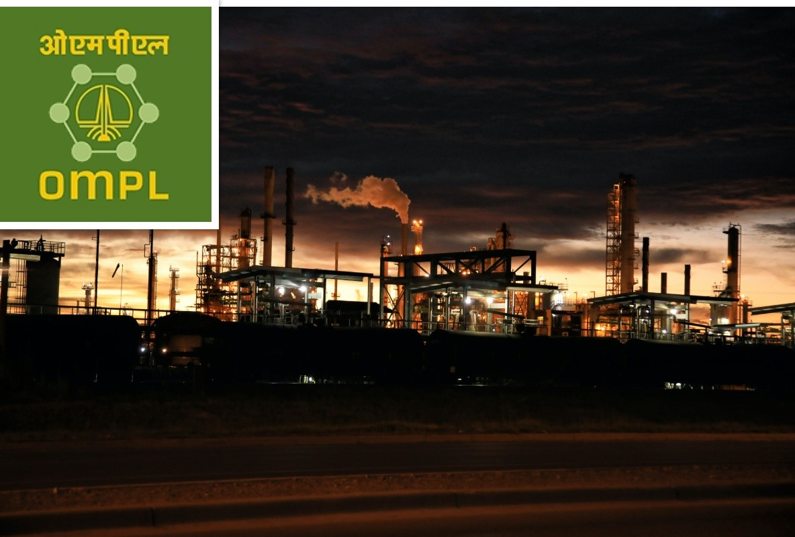
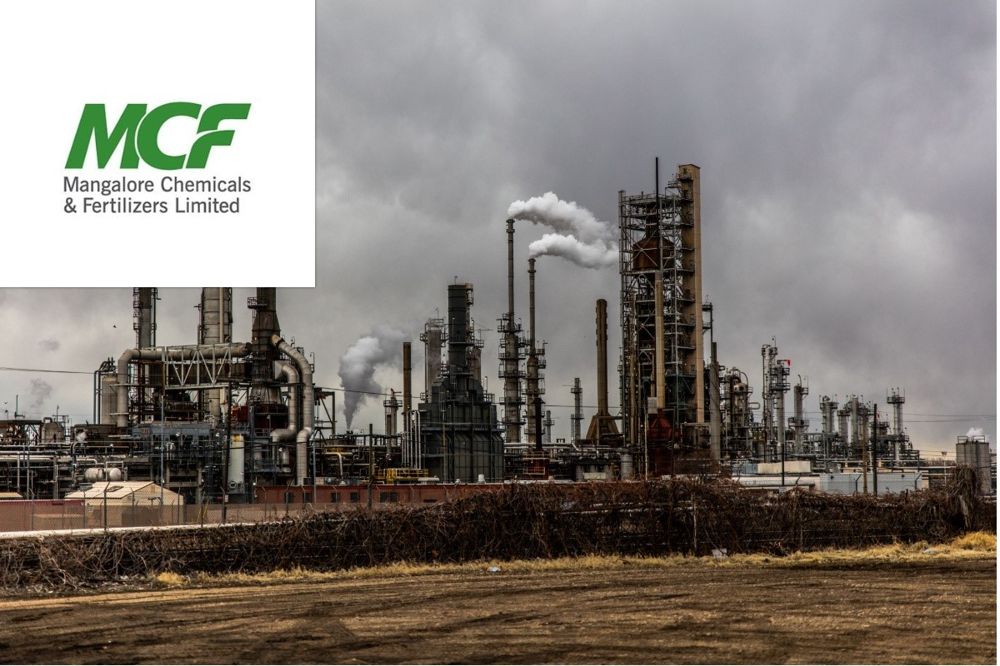

About me
I have a diverse set of skills, ranging from Data Analysis, Continuous Improvement, Supply Chain & Logistics, Quality Control and Lean Six Sigma. I am passionate about finding insights that never once was discovered before, and leading to new questions.
Skills
Education and work experience
 August 2014 - May 2018
B.Tech Mechanical Engineering (Major)
August 2014 - May 2018
B.Tech Mechanical Engineering (Major)
B.Tech Computer Science Engineering (Minor)
PES University
 

Worked in the Data Analytics team to help deliver effective business decisions & actionable data insights. Developed dynamic and interactive performance tracking dashboards in Power BI.

Implemented Six Sigma methodologies and Lean principles which resulted in increase in production rate by 38% and helped achieve annual production demand of 800K meters of fabric.
Negotiated contracts with 300+ suppliers and procured raw materials worth more than $200K. Ranked suppliers' based on performance parameters like quality, price, delivery precision and supplier responsiveness.

Provided support in Continuous improvement activities, optimizing production processes, quality control and safety.

Perform frequent maintenance check to solve different bottlenecks that occur in the plant. Performed scheduled preventative maintenance services on all mechanical systems equipment and components in the refinery.

A rotational trainee program which trained in various chemical fertilizer manufacturing plant within the facility like Urea, Di Ammonium Phosphate, Ammonia and Sulphuric Acid plant.
June 2015 - July 2015
Data Analyst Intern
Synergos
Identified traffic trends, pathing issues and opportunities for improving site conversion rates. Provided insigths, trends, and analysis of key performance indicators related to the catagory using competitive tools such as Power BI and Excel.
Projects
Inventory Analysis for a liquor store (Excel, Power BI).
May 2020 – Aug 2020
• Achieved historically low out of stock (OOS) percentage of 3.2% during summer 2020 peak sales season and handled 1200+ SKU’s.
• Executed First-Expired, First-Out (FEFO) instead of First-In, First-Out (FIFO) which resulted in 56% reduction in inventory being obsolete.
• Determined optimum re-order point which resulted in 12% annual cost savings.
Designed Forward Pick Area for a Distribution Center (Excel, Power BI).
Jan 2020 – May 2020
• Reduced picking cost and increased responsiveness to customer demand by 12% and 7% respectively.
• Optimized Forward-Pick Area of a warehouse which resulted in improved productivity and overall profitability by selecting the most
valuable SKUs from given data.
• Constructed a DC heat-map to analyze warehouse activities like – displaying location-based statistics such as annual pick-lines, cubic
volume of product removed, frequency of restock, weight of stored product, age of stored product, travel distance from shipping.
Improved Overall Equipment Effectiveness of machines using Root Cause Analysis for a FMCG company (Six Sigma).
Jan 2020 – May 2020
• Performed sensitive analysis using Pareto Analysis and Fishbone Analysis on WIMCO-4, PACMAC-6 & HICART machines which resulted in
reduction in machine breakdown frequency from 6 months to 3.5 years saving $100K annually.
• Identified bottlenecks in the process and implemented Kaizen & Kanban to ramp-up the manufacturing process
Implemented quality improvement measures to reduce the percentage of defective chocolate bar from 10.3 to 4.78 using DMAIC.